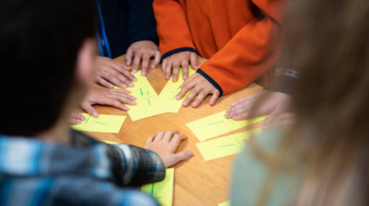

Os gurus digitais criam os filhos sem telas
Hoje em dia, qualquer criança tem o máximo de contato possível com a tecnologia seja em casa quanto na escola, mas isso é comum, afinal, a tecnologia esta ai pra isso incluindo os filhos daquele que a criam, certo? Certo, ou nem tanto.
A criação não moderna dos filhos da tecnologia
Escolas de todo o mundo se esforçam para introduzir computadores, tablets, quadros interativos e outros prodígios tecnológicos. Mas aqui, no Waldorf of Peninsula, uma escola particular onde são educados os filhos de administradores da Apple, Google e outros gigantes tecnológicos que rodeiam esta antiga fazenda na Baía de São Francisco, as telas só entram quando eles chegam ao secundário (o ensino médio). 
Na contramão do mundo moderno se assim podemos dizer, vemos a luta diária de alunos e escolas para poder implementar mais tecnologia nos seus ensinos, vemos que talvez isso não seja tão necessário assim, na escola? Apenas o bom e velho papel, lápis e caneta.
O que os pais da tecnologia falam sobre?
Os pioneiros da tecnologia deixaram isso claro desde o começo. Bill Gates, criador da Microsoft, limitou o tempo de tela de seus filhos. "Não temos telefones na mesa quando estamos comendo e só lhes demos celulares quando completaram 14 anos", disse ele em 2017. "Em casa, limitamos o uso de tecnologia para nossos filhos", explicou Steve Jobs, criador da Apple, em uma entrevista ao The New York Times em 2010, na qual disse que proibia os filhos de usarem o recém-criado iPad. "Na escala entre doces e crack, isso está mais próximo do crack", declarou Chris Anderson, ex-diretor da revista Wired, bíblia da cultura digital, também ao The New York Times.

Laurent, que só deu um celular ao filho mais novo quando ele estava no último ano do ensino básico (14 ou 15 anos), alerta para uma mudança perigosíssima no modelo de negócios, do qual foi testemunha em sua vida profissional. "Qualquer um que faz um aplicativo quer que seja fácil de usar", explica. "É assim desde o começo. Mas antes queríamos que o usuário ficasse feliz em comprar o produto. Agora, com smartphones e tablets, o modelo de negócios é diferente: o produto é gratuito, mas são coletados dados e colocados anúncios. Portanto, o objetivo hoje é que o usuário passe mais tempo no aplicativo, a fim de coletarem mais dados ou colocarem mais anúncios. Ou seja, a razão de ser do aplicativo é que o usuário gaste o máximo de tempo possível diante da tela. Eles são projetados para isso."